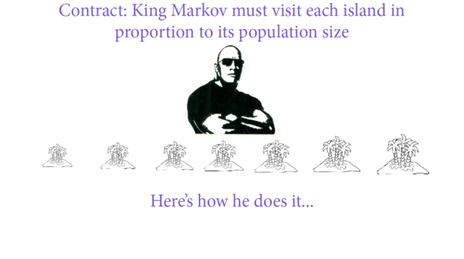

Consider a benevolent king who governs an archipelago of ten islands
Each island has a different population size. We don’t know exact population sizes, but we know which islands have more or less population than others. So island 1 has the smallest population, and island 10 has the largest population.
Sometimes, when King Markov visits an island for some matter of state, he decides he wants to visit other islands
He instructs his councilors that he should visit different islands in proportion to their population size
His councilors are also aware that King Markov hates to ride on boats, so they face the constraint that they can only hop from one island to an adjacent island
There is no opportunity to draw a proper sample, so how should King Markov’s councilors decide which island to visit next?

Good King Markov
Here are the steps the councilors came up with:
Flip a coin to generate a proposal for King Markov to move clockwise to the higher-numbered island, or counter-clockwise to the lower-numbered island
Accept the proposal if the proposed island has a larger population than the current island
If the proposed island has a smaller population than the current island, then flip another coin to determine whether or not to accept the proposal. However, the flip should be weighted toward accepting the proposal by the ratio of the population of the proposed and current island
Repeat these steps until King Markov is ready to return to his palace
Let’s try this out
Step 1
First, we’ll flip a coin to determine a proposal for King Markov to move clockwise to the higher-numbered island, or counter-clockwise to the lower-numbered island
set.seed(432)# which island did King Markov initially visit for his matter of state?current <-4flip <-sample(c(-1,1), size=1)flip
[1] -1
King Markov started at island 4, and the coin flip proposes that we move counter-clockwise to the lower-numbered island 3
Let’s write the proposal as the result of the current location plus the coin flip
proposal <- current +sample(c(-1,1), size=1)proposal
[1] 3
Notice that it’s possible to get values of 11 or 0. For these cases, let’s make sure they loop around so that a value of 0 goes to island 10, and a value of 11 goes to island 1
# loop around the archipelagoif(proposal<1) proposal <-10if(proposal>10) proposal <-1
Ok, so now what determines whether we accept the proposal?
Step 2
We should accept the proposal if the proposed island has a larger population than the current island
In our example, the King’s current island is 4, and the proposed island is 3
Because the current island has a larger population than the proposed island, we do not accept the proposal
Step 3
Because we did not accept the proposal based on Step 2, we now flip another coin to determine whether or not to accept the proposal. However, the flip should be weighted toward accepting the proposal by the ratio of the population of the proposed and current island
# move?prob_move <- proposal/currentprob_move
[1] 0.75
Note that under this coding, if we had gotten a value greater than 1, that means we would accept the proposal under Step 2
Under Step 3, we will accept the proposal with a coin flip that has a 75 percent probability of acceptance.
If we don’t accept the proposal, we will stay on the island we are on currently, and call that a visit
Time to flip the coin
current <-ifelse(runif(1) < prob_move, # take a random draw of any number between 0-1 proposal, # if random draw is greater than the probability of acceptance, accept current) # if random draw is less than probability of acceptance, rejectcurrent
[1] 4
We reject the proposal! We started on island 4, and for our first visit we stay on island 4
Let’s do this a few more times
proposal <- current +sample(c(-1,1), size=1)proposal
[1] 3
# move?prob_move <- proposal/currentprob_move
[1] 0.75
current <-ifelse(runif(1) < prob_move, # take a random draw of any number between 0-1 proposal, # if random draw is greater than the probability of acceptance, accept current) # if random draw is less than probability of acceptance, rejectcurrent
[1] 3
Step 4
Let’s repeat these steps many times using simulation
set.seed(432)num_weeks <-1e5positions <-rep(0, num_weeks)current <-10for(i in1:num_weeks) {# record current position positions[i] <- current# flip coin to generate proposal proposal <- current +sample(c(-1,1), size=1)# loop around the archipelagoif(proposal<1) proposal <-10if(proposal>10) proposal <-1# move? prob_move <- proposal/current current <-ifelse(runif(1) < prob_move, proposal, current)}out <-tibble(island=positions)#frq(out$island)
We collected the results of each of the 100,000 proposals. These results are referred to as the posterior distribution.
What do you think will be the result? Does this posterior distribution reflect a representative sample of King Markov’s islands?
ggplot(out, aes(island)) +geom_bar(color="blue",fill="dodgerblue2",alpha=.5,width=.3) +scale_x_continuous(breaks=1:10) +scale_y_continuous(labels=label_comma()) +labs(y="Visits",title="Metropolis sampler to the rescue") +theme(axis.title.y=element_text(angle=0, vjust=.4))
Yes!
Conclusion
We achieved (in the long run) a representative sample based on an algorithm that assigns probabilities of selection based on the relative sizes (weights) of the data points
This algorithm is the theoretical basis for all Bayesian analysis. The algorithm crawls through your sample of data and explores all aspects of it through simulation, and returns samples of data based on the posterior distribution.
We then use these samples of data from the posterior distribution to conduct inferential statistics. This procedure is generally considered superior to the statistical tests you learned in school. The first reason is that those statistical tests rely on assumptions about the data you are working with, while Bayesian analysis does not rely on such assumptions about the shape of your data.